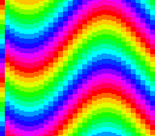

|
OpenSNES
Modern Open-Source SNES Development SDK
|
|
OpenSNES
Modern Open-Source SNES Development SDK
|
Family 2 (Backgrounds) · rung 2.8 — the offset-per-tile modes (2/4/6).
Modes 2, 4 and 6 have a trick no other mode offers: offset-per-tile (OPT) lets every 8-pixel column of a layer scroll independently. That is how you get a flag rippling in the wind, a heat-haze shimmer, water distortion, or cheap per-column parallax — effects that would otherwise cost a scanline of HDMA or a full software redraw. It is niche, but when you want it, nothing else does it as cheaply.

The single idea: in Mode 2, BG3 stops being a drawable layer and becomes an offset table. For each column of BG1/BG2, the PPU reads a scroll offset straight out of BG3's tilemap:
This example puts a stack of horizontal colour bands on BG1 and writes a sine into BG3's V-offset row, so each column samples the bands at a different height — the bands ripple. The phase advances each frame. Modes 4 and 6 reuse this exact data path (mode 4 packs H/V into one word with a select bit), so this one example teaches the whole OPT family.
Probe oracle: wave_phase advances every frame.
console, dma, background, math
← the rest of the family covers the everyday modes (mode1, mode0, mode3, mode5); this rung is the specialist OPT modes. For per-scanline (rather than per-column) tricks, see the hdma family.